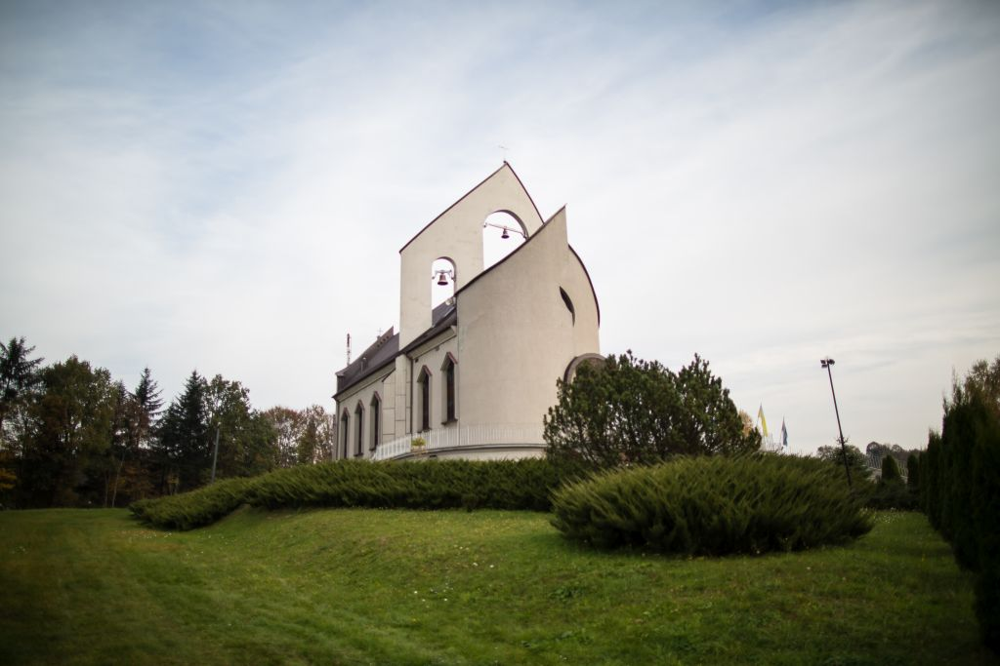

Historia
• Budowę kościoła rozpoczęto w 1981 roku i ukończono dwa lata później.
• W 1966 roku erygowano osobną parafię.
• Do 1981 roku mieszkańcy wsi korzystali z tymczasowego kościoła, rozbudowanej kaplicy MB Szkaplerznej.
Powrót
Informacje
Historia
Ciekawe Miejsca
Galeria